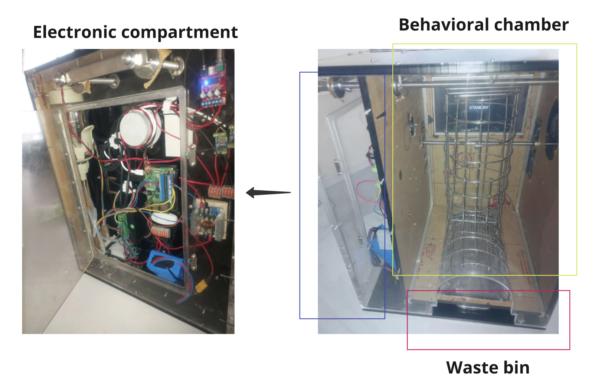
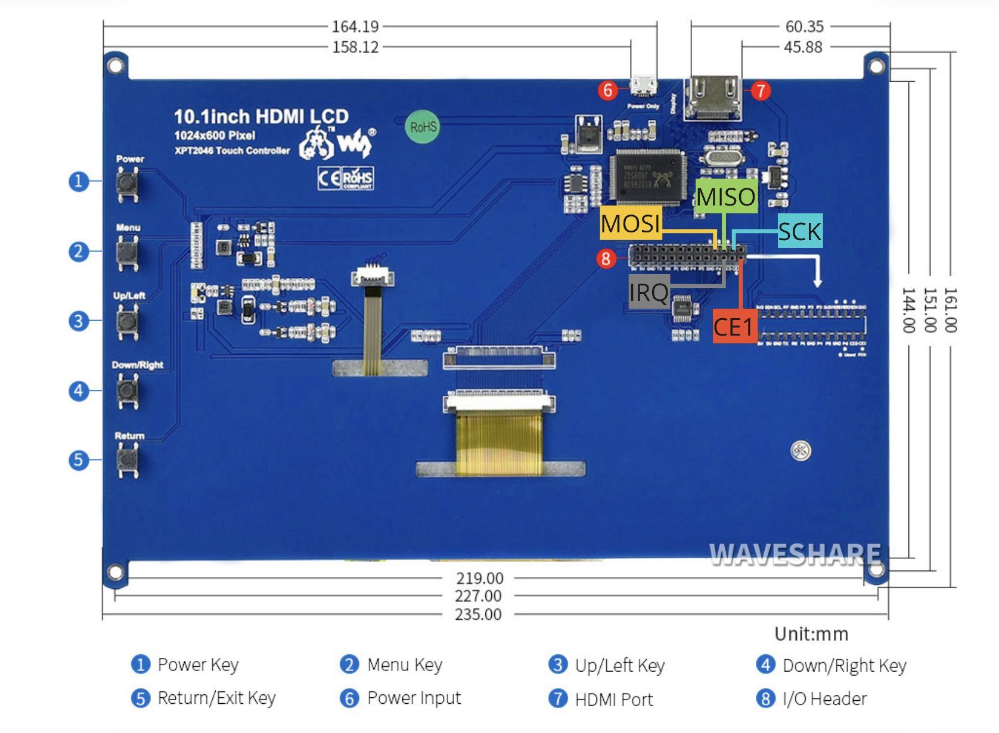
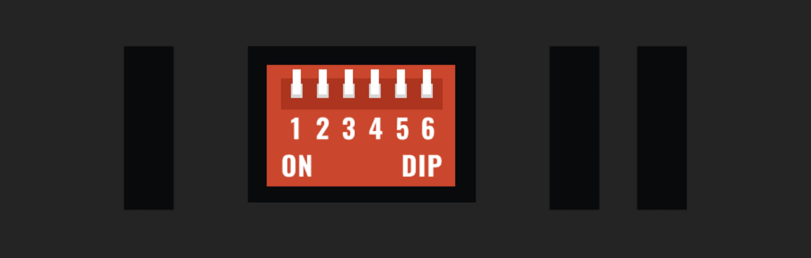

Integrated System Implementation
Apparatus (Prototype)

A cage-based device is designed according to the marmoset experimental behavioral instrument (MXBI) [A.Calapai et al. 2022]. The device's design has been slightly modified from MXBI to enhance the capabilities of experiments.
The main component is divided into three sections.
- Behavioral chamber
- Electronic compartment
- Waste bin
Equipments
The electronics compartment on the left side of the instrument contains:
- Raspberry Pi 4 Model B
- Raspberry Pi Camera Module 3
- 2x Visaton FR58, 8 Ω, 120–20,000 Hz: Note that one speaker is housed in the electronics compartment, while the other is wired to the opposite side of the instrument.
- Peristaltic pump (JIHPUMP MN3 Mini OEM Peristaltic Pumps MN3/BT)
- 134.2K WL-134 Long distance RFID Animal Tag Reader Module
- 24v 7Ah Lithium ion battery with XT60 connector
- HW-652 YAMAHA YDA138-E 12W+12W Dual Channel Digital Audio Amplifier Board DC 12V
- TB6600 Single Axis 4A Stepper Motor Driver Controller 9~42V Micro-Step CNC
- 3x 300W 20A DC-DC Adjustable Step Down Converter Module Constant Current
The behavioral chamber in the middle hosts:
- Waveshare 10.1inch Resistive Touch Screen LCD
System Diagram

The system utilizes a Raspberry Pi single-board computer to provide general-purpose input/output (GPIO) capabilities, enabling researchers to interface with a diverse range of external hardware components. The modular design allows for flexible hardware configurations tailored to specific task requirements.
Touch Screen Connection
A 10-inch Waveshare HDMI LCD touchscreen is employed for visual cognition tasks. To facilitate resistive touch functionality, only five pins are necessary for communication via the Serial Peripheral Interface (SPI) protocol.
- SCK (Serial Clock): Clock signal from the master (Raspberry Pi) to synchronize data transmission.
- MOSI (Master Out Slave In): Used for sending data from the master (Raspberry Pi) to the touchscreen controller.
- MISO (Master In Slave Out): Used for receiving data from the touchscreen controller to the master.
- CE1 (Chip Enable 1/Chip Select 1): Used to select the touchscreen for communication (low active).
- IRQ (Interrupt Request): Used by the touchscreen to signal the master that an event has occurred (low level while the Touch Panel detects touching).
To preserve the remaining GPIO pins and ensure a modular design, the Raspberry Pi is not mounted directly onto the display module, as recommended in Waveshare’s documentation. Instead of soldering the five pins directly from the back of the panel to connect to the Raspberry Pi, a detachable interface is utilized. Refer to the diagram below for the connection details.

The panel requires screen configuration and touch calibration before it can be operational. Refer to the 'Software Setting' and 'Touch Calibration' sections in the Waveshare documentation for detailed instructions.
Waveshare 10.1inch HDMI LCD Documentation
Peristaltic Pumps Connection

The Mini OEM Peristaltic Pump, model MN3/BT from JIHPump, is powered by a 24V DC, 48W stepper motor. To unlock its full potential, the system utilizes a TB6600 controller, enabling precise control and synchronization.
The MN3/BT employs a 4-wire stepper motor, comprising two coils, with each coil featuring two wires. The wiring configuration is illustrated in the diagram below.
If a different stepper motor is used, identify the wires belonging to the same coil by measuring the resistance between them using a multimeter.
- If two wires are part of the same coil, they will show a measurable resistance (typically a few ohms).
- If the wires are from different coils, the resistance will be very high (open circuit).
To control the motor, three pins are required.
-
PUL (Pulse): This pin is used to control the steps of the stepper motor. Each pulse sent to this pin will cause the motor to move one step. The frequency of the pulses determines the speed of the motor.
-
DIR (Direction): This pin controls the direction of the motor rotation. A high signal (5V) will make the motor rotate in one direction, and a low signal (0V) will make it rotate in the opposite direction.
-
ENA (Enable): This pin is used to enable or disable the motor. When this pin is high, the motor is disabled, and when it is low, the motor is enabled.
PUL, DIR, and ENA are connected to the microcontroller’s digital output pins.

Additionally, the TB6600 stepper motor driver features six DIP (Dual In-line Package) switches on its board. These switches are used to configure two key parameters:
-
Current: This sets the maximum current that the driver will supply to the motor. The configured current must not exceed the motor's rated current capacity.
-
Microstep: Microstepping enables finer control of the stepper motor, resulting in smoother rotation and improved precision."
The switches on the DIP switch bar are binary, with only two possible positions: on (1) and off (0).

Refer to the diagram below for the switch numbering and their corresponding configurations.

The stepper motor's current (amp) setting can be found in the model's specification sheet. For the MN3/BT stepper motor used in this project, a current setting of 2 amps is required, corresponding to the switch configuration S4, S5, S6 as ON, OFF, OFF.
Reference : How to set dip switches correctly